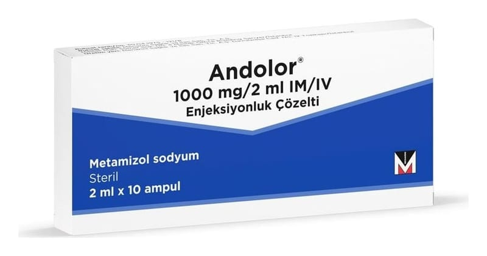

Andolor 1000 mg/2 ml IM/IV Enjeksiyonluk Çözelti

Ne için kullanılır
KT · Bölüm 1ANDOLOR, metamizol sodyum etkin maddesini içerir. Bir ampul içinde 1 g metamizol sodyum vardır. Bir ampul içinde 2 ml çözelti bulunur ve berrak, açık sarı renkli bu çözeltinin 1 mL’sinde 500 mg etkin madde bulunur. 10 ampulden oluşan ambalajlarda kullanıma sunulmuştur.
Piyasada ayrıca ANDOLOR’un tablet formu da bulunmaktadır.
ANDOLOR, pirazolon grubuna ait ağrı kesici ve ateş düşürücü olarak kullanılan bir ilaçtır.
ANDOLOR aşağıdaki durumların tedavisi için kullanılır: - Yaralanma veya cerrahi sonrası ani gelişen (akut) şiddetli ağrı - Kramp benzeri karın ağrısı (kolik) - Kansere bağlı ağrı - Başka bir tedavinin mümkün olmadığı diğer akut veya kronik şiddetli ağrı - Diğer önlemlere yanıt vermeyen yüksek ateş
ANDOLOR enjeksiyonluk çözelti yalnızca, diğer formlarla (tablet, şurup veya oral damla) tedavinin mümkün olmadığı durumlarda kullanılmalıdır.